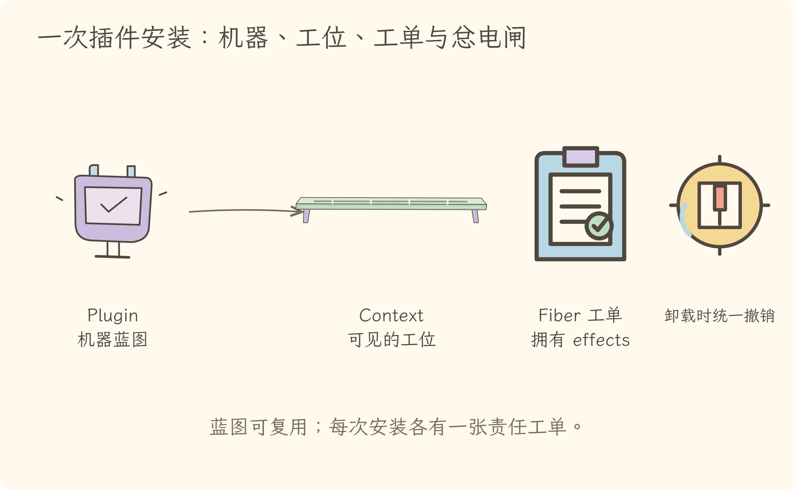
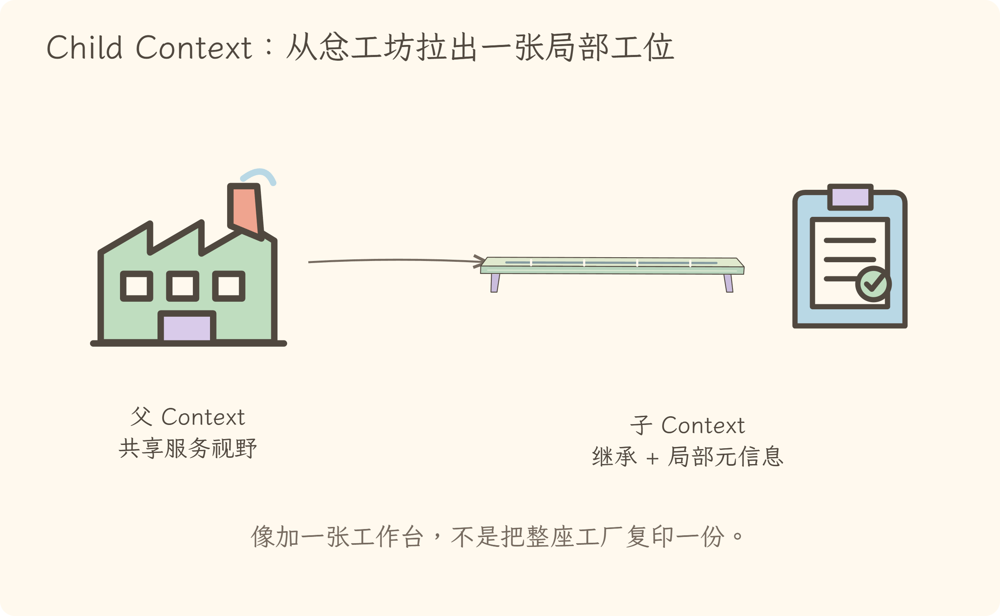
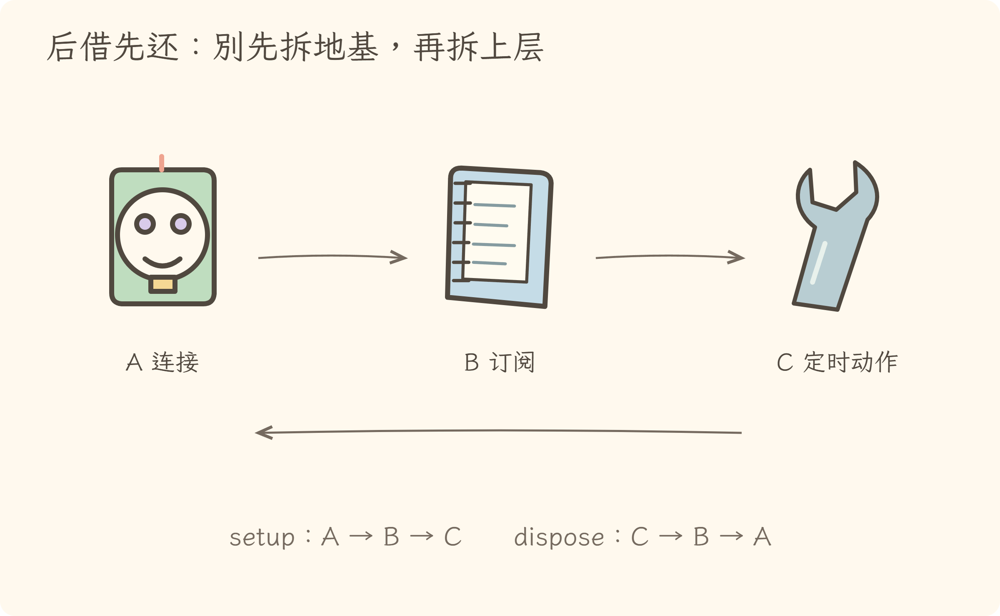
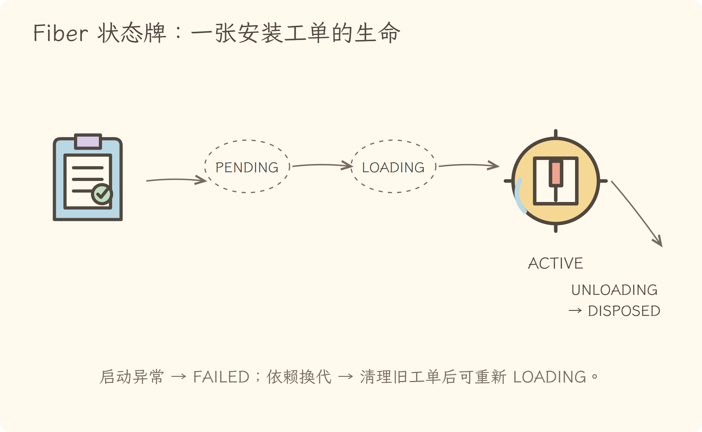

学习导航
第 6 次学习导航：Cordis 的可撤销插件工位
源码快照：cd5ef8148158c3a752a658978873241fdf8e2bbc
这一讲只追一个问题：插件装上以后留下的服务、监听器和异步资源，卸载时由谁负责收回？
把 Cordis 想成模块化工坊：Plugin 是机器蓝图，Fiber 是一次安装的工单，Context 是这张工单能看见的工位，effect 把“借出资源”和“归还动作”订在一起。
建议顺序
| 时间 |
做什么 |
带走什么 |
| 10 分钟 |
看 视觉课件 |
记住四个角色和一条生命周期 |
| 35 分钟 |
读 逐步讲解 |
从 ctx.plugin() 追到 _unload() |
| 15 分钟 |
做 练习 |
判断谁拥有清理责任 |
| 5 分钟 |
试讲 分享稿 |
用工位比喻讲给别人 |
完成标准
- 分清 Plugin 与 Fiber。
- 解释 child Context 为何不会改坏父 Context。
- 写出一个 setup 返回 disposer 的 effect。
- 解释依赖消失时为什么先 UNLOADING，之后才可能重新 LOADING。
视觉课件
第六讲视觉课件 · 给每次插件安装发一张可撤销工单
1. 四个词其实是一条装配链

Plugin 是可复用蓝图；Fiber 才是这一次安装。Fiber 拿到 child Context，并拥有这次安装产生的 effects。
2. 子 Context 是新工位视野，不是复制整个工坊

extend() 通过原型继承创建 child，父 Context 不被修改。
3. effect 是借用与归还的成对协议

只做 setup 不交 disposer，等于借走钥匙却没留下归还办法。
4. 后借先还，避免拆掉地基后再拆上层

倒序规则适用于同一 effect 收集的 disposers；Fiber 的多个顶层 effect 卸载时可并行清理。
5. Fiber 状态牌描述一次安装的生命

依赖重新可用时，已卸载的有效 Fiber 还能再次 LOADING；Fiber 不是线程。
逐步讲解
第六讲逐步讲解 · 从装上模块到收回最后一把钥匙
源码快照：cd5ef8148158c3a752a658978873241fdf8e2bbc
一、先看一条完整装配链
调用 ctx.plugin(plugin, config) 时，Registry 先把函数、类或 { apply } 形态归一化，再创建 new Fiber(...)。因此：
- Plugin：可以反复使用的定义或蓝图；
- Fiber：某个 Context 上的一次安装实例；
- Context：该实例解析服务、事件和局部配置的视野；
- effect：Fiber 拥有的可撤销副作用。
同一 Plugin 可以在不同 Context 上产生多个 Fiber，就像同一型号机器能装到多个工位。
二、Context 不是全局大口袋
Context 是根/子依赖容器，属性读取通过服务解析器。它看起来像 ctx.fs 这样的普通属性，背后却要按当前 Fiber、inject 与 scope 找实现。
extend(meta) 用原型继承创建 child：子工位默认看见父工位提供的能力，却能挂自己的 fiber、isolate 或 intercept 信息。它不是把所有服务复制一份，也不会反向修改父对象。
三、Fiber 是责任边界，不是线程
Fiber 记录这次安装的配置、依赖快照、状态、effects 和清理动作。它与 Java Thread、协程或 CPU 调度没有关系。
Fiber 构造时会给插件一个带 { fiber: this } 的 child Context。插件执行期间通过 ctx.on()、ctx.provide() 或 ctx.effect() 创建的资源，最终都能归到这张工单名下。
四、effect 为什么必须返回 disposer
ctx.effect(() => {
const timer = setInterval(tick, 1000)
return () => clearInterval(timer)
}, 'heartbeat')
effect() 立即执行 setup，并收集它产出的 disposer。返回值还可以是 Promise、同步或异步迭代器，但核心契约不变：创建一项外部影响时，同时交出撤销办法。
这和 Java 的 try-with-resources 很像：不是等忘记资源以后再想办法关，而是在获得资源时就把关闭责任绑定到明确的生命周期。
五、为什么倒序清理
若 setup 依次建立 A=连接、B=订阅、C=定时任务，C 往往依赖 B，B 又依赖 A。卸载应先停 C，再退订 B，最后断 A。
源码在 fiber.ts#L424-L441 对同一 effect 内收集的 disposers 使用 reverse()。边界要说清：_unload() 对 Fiber 的多个顶层 effect 使用 Promise.all；不能把“所有清理全局严格倒序”当成事实。
六、状态机是依赖变化的结果
PENDING：依赖还没齐；LOADING：正在执行插件 setup；ACTIVE：已加载且依赖有效；UNLOADING：正在运行清理；DISPOSED：永久结束；FAILED：启动失败的可观察状态。
_refresh() 把当前依赖实现的 uid 拼成 epoch。依赖消失或换成另一实现，epoch 改变，Fiber 会卸载旧 effects；依赖重新满足时再加载。
七、一句话总结
Cordis 的关键不是“能加载插件”，而是让每次插件安装都有明确的可见范围、依赖快照和清理责任：蓝图可复用，工单可追踪，副作用可撤销。
练习与答案
第六讲练习与答案
练习 1：Plugin 还是 Fiber
同一个插件在两个 isolate Context 中各加载一次，是一个 Fiber 还是两个？
展开答案
两个。Plugin 是可复用定义，每次 ctx.plugin() 安装产生自己的 Fiber、child Context、配置与 effects。
练习 2：识别泄漏
下面的 effect 有什么问题？
ctx.effect(() => setInterval(tick, 1000))
展开答案
setInterval 返回数字或对象，不是合法 disposer；代码既会触发 Invalid effect，也没有表达如何 clearInterval。应在 setup 中保存 timer，并返回清理函数。
练习 3：清理顺序
连接 A、订阅 B、定时器 C 在同一 effect 内依次登记，卸载顺序是什么？
展开答案
C → B → A，后登记的 disposer 先执行。
练习 4：Context 边界
child = ctx.extend(meta) 是否复制了一份所有服务？
展开答案
不是。child 原型继承父 Context；服务读取仍经过 resolver。它获得新的局部元信息，但默认共享未隔离的服务视野。
练习 5：依赖替换
一个 ACTIVE Fiber 注入了 fs，当前 fs provider 被卸载并换成另一个实现，为什么不能原地继续？
展开答案
依赖实现 uid 组成的 epoch 变了。Fiber 先卸载旧 effects，避免旧资源继续绑定原 provider，再在依赖满足后重新加载。